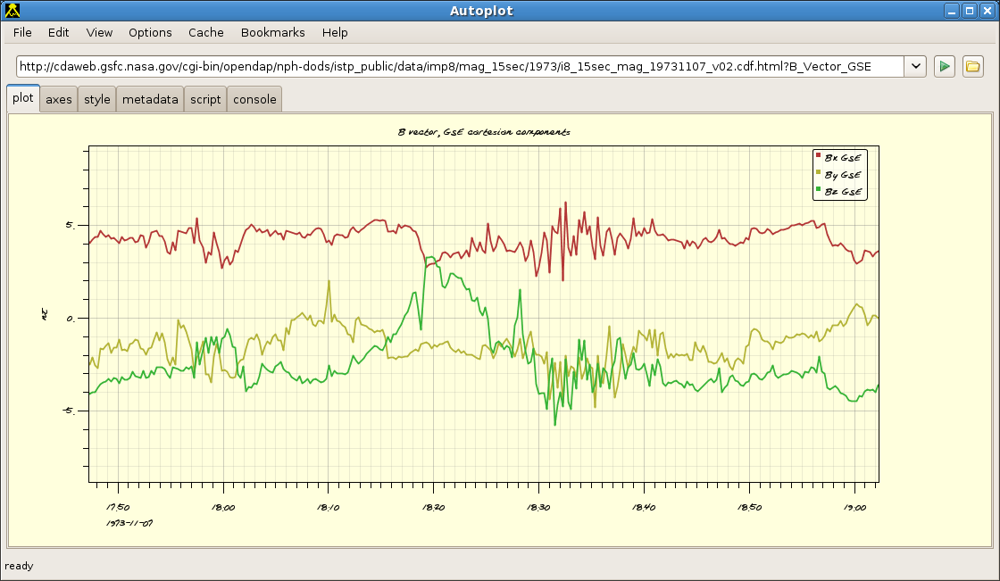

Autoplot Application (#{tag})

Minor tweaks to the undo list include checking for bindings to timerange.
Autoplot attempts to allow plotting of data from many data sources, including local files and OpenDAP servers.
Datasets are identified with URIs, and by the URI's extension a module is used to load the data into the internal data model. Data is then
displayed by guessing the rendering method and axis ranges to provide a reasonable, useful view of the data.
This is the Autoplot2012b branch. This is an update to the production version containing bugfixes and minor new features.
Single-jar version, autoplot.jar, can be run without network access and from the command line. Note CDFs are only supported
via the Java-based reader and Autoplot will attempt to use it when the C-based version is not available.
Bugfixes:
- 3594789: poor feedback when component unbundles are incorrect
- reset method is no longer synchronized, since Java6 would sometimes get hung up in there
- specifying TYPICAL_MIN but not TYPICAL_MAX would cause NullPointerException in autoranging.
- CEF explicitly set SCALE_TYPE=linear if log was not specified. Sometimes the data should be used to decide.
- autorange code has code to prevent use of log when SCALE_TYPE=linear.
- labels would not reset when switching from spec->series->spec->series.
- 3590689: bugfixes with aggregation of qstreams when reducing CDF data with BUNDLE_1
- digitizer output .dat file is formatted so that Autoplot gets the column labels and units
- add kludge for Seth's data with rank2 DEPEND_1 to restore old labeling before AGU.
- add kludge for waveform display type where nT units are incorrectly labeled as seconds
- joinProperties handled DELTA_PLUS, DELTA_MINUS and WEIGHTS_PLANE
- long parameters in JythonDataSource dialog just have "default" for the button label
- put a space in jnlp title so it inserts linebreaks nicely on desktops
- CDF Rank2 BUNDLE properties read in when DEPEND_1 is Rank 2.
- add logging to aggregation to figure out why Dan's seeing inconsistent behavior
Older Bugfixes:
- local paths with /tmp in the path would fail.
- hugeScatter repaints properly, finally...
- cdf-java attempts to read to memory outside JVM, then falls back to JVM memory
- 3586029: progress monitor cancel enabled for setTaskSize 1 of 3 (CDAWeb)
- rte_0818219940: null pointing when editing bookmarks
- 3586030: one record of waveform data didn't autorange properly
- polar_fnl_ceppad-HISTe-lsort-l3_19970101_v1.0.0.cdf shows null pointer because failed to check for dimSizes=null
- 3586034: multiple monitors on some Windows 7 locks up. (Possible fix)
- validate data as it is read into aggregations to improve feedback
- George's problem where aggregation didn't work because of bug with reading 1-record CDFs
- shrink-vap-to-fit now scales fonts (and ems for layout) as well.
- 3585373: CDF Java fails immediately with out of memory. First attempt outside-JVM memory, then fall back to within JVM
- first progress indicator for loading in Ephemeris
- hugeScatter handles incorrect units like the scatter mode, putting up warning but plotting data anyway.
- TCAs (Emphemeris) in vap files are handled properly, so the date label is turned of when load a vap with emphemeris
- time range editor doesn't forget orbit number
- jython editor scroll increment set properly when editor has lots of arguments.
- sparse variables in Native CDF supported.
Features:
- undo list uses unicode arrow instead of ->, bindings to timerange are subsumed.
- pngwalks support in-line wildcards like http://apps-pw.physics.uiowa.edu/hudson/job/autoplot-test500/10*/artifact/diffs.test500_009.png
- .jy extension is automatically handled as a script.
- datum.toString() finally returns times in order-one time offset units to improve readability
- add 2-D rebin function for going from X,Y,Z bundles to Z(X,Y) spectrogram to support scripting.
- 3588938: introduce reduction in aggregation, add &reduce=T to try this out.
- aggregation joinProperties handles DELTA_PLUS, DELTA_MINUS and WEIGHTS_PLANE
- SemanticOps.isTimeSeries is canonical check for datasets of this type.
- events renderer mouse show multiple events for overlaps
- scale=T added to export to wav, GUI added as well.
- allow jump into jyds editor from built-in editor.
- RBSP orbits come from one of three servers for robustness, and embedded within jar for offline use.
- introduce GUI for picking timeranges, look for the "calendar" icon on the time range editor.
- allow scripts, like the digitizer application, to register a hook that prevents exiting and loosing work.
Less recent features:
- stack of lineplots view when CDF Y Tags are rank 2
- hidden feature allows state files to be saved with each undo state. See http://sarahandjeremy.net/~jbf/autoplot/script/enableStateSupport.jy
- delegate granule in aggregation is based on timerange, if available
- New QDataSet.NOTES allows datasets to be annotated, initially to document where AggregatingDataSource encounters exceptions in reads
- new LSpec.rebin produces data on fixed cadence
Known issues:
This completes the feature set for the new production branch. No major features will be added before branching this version.
A production branch will be started in a couple of weeks, and the "Start Autoplot" link at the top of
autoplot.org will run this version.
Feedback on the function and quality of this release is greatly appreciated!
data is input from:
- ASCII files (.dat,.txt)
- CSV files (.csv)
- Binary files (.bin)
- CDF files(.cdf)
- Excel spread sheets (.xls)
- das2Streams (.d2s or .das2Stream)
- ViRBO's TSDS server
- CDAWeb data server (vap+cdaweb:)
- das2servers (vap+das2server:)
- QStreams (.qds), QDataSet on a das2Stream
- Plasma Wave Group das2 Server
- NetCDF files (.nc,.ncml)
- HDF5 files (.h5,.hdf5)
- DODs servers (.dds)
- Cluster Exchange Format files (.cef)
- Fits Format Files
- Images (.jpg, .png, .gif)
- Wav audio files (.wav)
This is not complete, and limitations include:
- Quantities of rank 3 dimensionality (e.g. flux(Time,Energy,pitch) are plotted by slicing.
- Quantities of rank 4 dimensionality (e.g. flux(Time,Energy,azimuth,sector) are plotted by slicing twice.
autoplot.org is the wiki website, and contains
more information than this launch page.